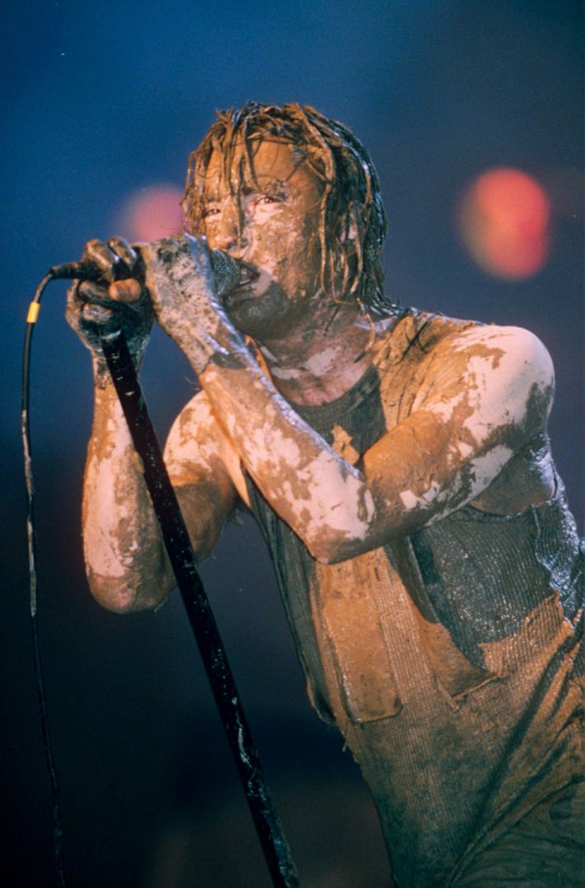

The Great and Talented Trent Reznor (My Favorite Musician)

Trent Reznor is an American musician raised in Mercer, PA, where he longed
to escape from due to it's lack of substance. He founded Nine Inch Nails, a
very popular and revolutionary band, in 1988 during his residence in Cleveland, OH.
Why I Love This Artist
- His musical content has always been very original.
- He has always been honest about where he's coming from with his content.
- He revolutionized industrial music then made his own style of music.
- He's a very talented multi-instrumentalist, which is something I strive to be.
All you need to know about Trent Reznor.